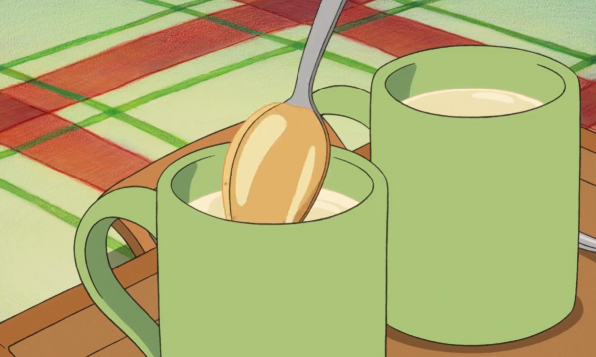

Sweet comfort while crossing seas with Ponyo. A magical bedtime sip. 🌊🐟
This sweet treat will be sure to warm you and mysterious new fishy friends on a dark and stormy night while your dad is looking for you.
I would also cross the sea for this sweet beverage. Serve hot and blow on it a couple of times before you enjoy your first sip (or big gulp). Yield: 1 serving Prep time: 5 minutes Cook time: 5 minutes
Ingredients
1 ½ cups whole milk
1 cinnamon stick, broken in half
1 heaping tablespoon honey
pinch of ground cinnamon

🍯 Warm, comforting, and as gentle as Ponyo’s waves.
Instructions
To a small pot over medium to low heat, add the milk and bring it to a boil. Be careful not to burn the milk or let it bubble over.
Once the milk has been brought up to a boil, turn off the stove and add the cinnamon stick. Let it steep in the hot milk for 4 minutes, then remove.
Pour the hot milk into a mug and add the honey. Stir until the honey has dissolved.
Sprinkle with a pinch of ground cinnamon and enjoy warm.
Tips
If you are vegan or lactose intolerant, coconut milk is a great alternative and adds more tropical flavors to this beverage.